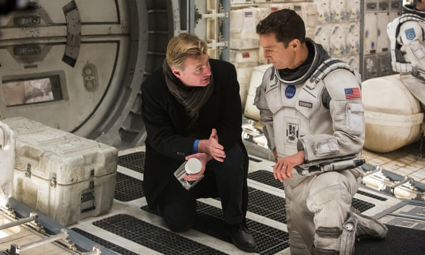

Interstellar ทะยานดาวกู้โลก
เนื้อเรื่อง
เรื่องราวในยุคช่วงปลายของโลกที่ทุกอย่างกำลังจะจบสิ้นลงตามวัฏจักรแห่งจักรวาล มนุษยชาติกำลังจะต้องเผชิญกับความยากแค้นขาดแคลนซึ่งอาหารและต้องผจญกับภัยพิบัติทางธรรมชาติต่างๆ หนทางในการแก้ปัญหามีทางเดียว ซึ่งไม่เหลือทางเลือกสำหรับการกอบกู้โลกด้วยวิธีใดอีกต่อไปแล้ว แต่เป็นทางเลือกที่จะพลิกหน้าประวัติศาสตร์ของมนุษยชาติไปอย่างสิ้นเชิงกับการเดินทางข้ามสู่กาแล็คซี่อันไกลโพ้น เพื่อค้นหาดาวดวงใหม่สำหรับมนุษย์.
“คูเปอร์” นายวิศวกร คุณพ่อลูกสอง ต้องตัดสินใจในการเข้าร่วมทีมที่สำคัญสุดในประวัติศาสตร์มนุษยชาติครั้งนี้ เพื่อร่วมเดินทางค้นหาดาวดวงใหม่ให้กับมนุษยชาติ พร้อมกับการต้องลาจากกับครอบครัวและลูกๆ.

ภารกิจที่ไม่รู้ปลายทางว่าอยู่ห่างไกลเพียงใด ไม่มีอะไรรับรองความสำเร็จ และไม่มีทางรู้ด้วยว่าจะได้กลับมาหรือไม่… เรื่องราวการเดินทางข้ามผ่านห้วงเวลาแห่งมิติผ่าน “รูหนอน” ที่ซึ่งเป็นเพียงหนทางเดียวของความอยู่รอดเพื่อรักษาเผ่าพันธุ์มนุษยชาติและเพื่อลูกๆอันเป็นที่รักของคูเปอร์.
การผลิตและกำกับ
นักฟิสิกส์ทฤษฎี คิป ธอร์น เป็นที่ปรึกษาทางด้านวิทยาศาสตร์ของภาพยนตร์เรื่องนี้ เพื่อให้แน่ใจว่าภาพของรูหนอนและสัมพัทธภาพมีความถูกต้องที่สุดเท่าที่จะเป็นไปได้ "สำหรับภาพของรูหนอนและหลุมดำ” เขาบอก "เราปรึกษากันว่าจะทำกันยังไง จากนั้นผมก็ได้สมการซึ่งจะทำให้การติดตามเส้นทางเดินของแสงในขณะที่พวกมันเดินทางผ่านรูหนอนหรือไปรอบ ๆ หลุมดำได้ ดังนั้นสิ่งที่คุณเห็นนั้นมีพื้นฐานมาจากสมการสัมพัทธภาพทั่วไปของไอน์สไตน์".